摘要
本专著从零重新撰写，系统总结了我们称之为 AB 云的数值研究：这是一种格点量子系统（带阿哈罗诺夫–玻姆相位的 Hofstadter 哈密顿量），其中拓扑涡旋激发产生非均匀相位织构，其本征值分布与黎曼 ζ 函数零点的统计进行比较。文中每一个论断都附有自动化的 37 项测试验证套件（v18/v19 版，2026 年 8 月）给出的可复现数字：每个数字都标注测试编号，每项测试都生成完整计算日志，每次套件运行都会在磁盘上留下包含四种格式报告（Markdown、HTML、PDF、DOCX）、三种图形格式以及逐时间戳日志的目录，供独立验证之用。
主要验证结果如下。第一，在光滑规范（:monumental
涡旋相位模型）下，环面上 AB 云谱的相邻能隙比平均值为 \(\langle r\rangle = 0.585 \pm 0.026\)，GUE
目标值为 \(0.5992\)，偏差 \(-2.4\%\)（测试 33）；对晶格尺寸 \(L = 10, 20, 30, 50\) 的扫描显示单调收敛
\(0.548 \to 0.592 \to 0.605 \to
0.595\)（测试 34）。第二，将 AB 云的展析间距与最初 5000 个 ζ
零点直接比较，云的对关联函数在整个区间 \(s\in[0;3]\) 上更接近 GUE
而非泊松，但在如此小的系综下，双样本 Kolmogorov–Smirnov
检验拒绝分布完全相同的假设（\(p =
6.7\cdot10^{-4}\)；测试
35）——我们如实记录该偏差并以系综有限性加以解释。第三，构造的拓扑骨架以机器精度得到确认：狄拉克弦规范下恰好有一个元胞携带磁通
\(2\pi q\)（测试 15、24）；Byers–Yang
定理对整数电荷成立到 \(3.5\cdot10^{-15}\)，分数电荷则偏离 \(0.34\)（测试 25）；最低朗道能级的陈数为
\(C_1 = 2\)（测试 20）；\(\alpha = 1/2\) 处的 Connes 自对偶产生恰好 4
个零模（测试 17）。最后，低能动力学呈现狄拉克锥，能隙线性标度 \(E_{\min}\propto 1/L\)，\(R^2 = 0.9997\)（测试 19）；\(\alpha = 1/2\) 处态密度呈现对比度 \(20\times\) 的狄拉克凹陷（测试
30）；偏离厄米点 \(\sigma = 1/2\)
时出现 Hatano–Nelson 趋肤效应（测试 32）。
这些结果共同构成连贯的图景：AB 云是一个相位谐振腔，普适的 GUE 统计源于复数跃迁相位对时间反演对称性的破坏，涡旋表现得像相对论性粒子，而临界线 \(\sigma = 1/2\) 作为自对偶点格外突出——云的统计在此处最接近 ζ 零点的统计。我们始终区分”已被证明的（机器精度）“、”可靠测量的（校准统计带）“与”仍属开放的（大 \(T\) 渐近）“，并为每个结论提供明确判据——读者无需盲信本书中的任何一个数字。
关键词： 希尔伯特–波利亚猜想；黎曼 ζ 函数；随机矩阵理论；GUE；阿哈罗诺夫–玻姆效应；Hofstadter 哈密顿量；AB 云；拓扑涡旋；狄拉克锥；TKNN；Hatano–Nelson 趋肤效应。
1. 引言与问题设定
1.1 希尔伯特–波利亚猜想
1914 年黎曼猜想 ζ 函数的所有非平凡零点位于临界线 \(\mathrm{Re}\,s = 1/2\) 上。近半个世纪后的 1958 年，希尔伯特（据 Pólya 回忆）提出了如今称为希尔伯特–波利亚猜想的策略：若能找到谱与零点纵坐标 \(\{\gamma_n\}\) 重合的自共轭算符 \(\hat H\)，则黎曼假设立即成为定理——厄米性迫使所有本征值为实，即对所有 \(n\) 有 \(\mathrm{Re}\,\gamma_n = 1/2\)。该纲领的美妙之处在于把解析数论翻译为量子力学语言：ζ 零点成为某个（尚未知晓的）物理系统的能级。
该猜想至今未被证明，但它恰好构成本书的框架：我们构造并研究一类具体的量子格点系统，其谱统计逼近普适的随机矩阵行为。必须强调区别于以往文献的方法论立场：我们不宣称证明黎曼假设。我们的对象是对”有限格点系综如何逼近普适随机矩阵统计、哪些参数使逼近更近或更远”的精确数值刻画。所有”逼近程度”的判据在运行测试之前预先固定，研究中绝不调整。
历史背景简述：1972 年 Montgomery 提出零点对关联猜想；Dyson 在普林斯顿高等研究院茶室偶遇 Montgomery 时指出，该公式与随机矩阵理论中 GUE（高斯幺正系综）本征值对关联一致。1980 年代 Odlyzko 在庞大数据上数值确认了这一吻合；1985 年 Berry 计算了有限尺寸修正：真实的（有限 \(T\)）零点样本必须以可预测方式偏离纯 GUE 预测——特别是原点处对关联 \(R_2(0)\) 获得按 \(T\) 幂次衰减的修正。这些修正对我们至关重要：它们解释了为什么测试 4–6 与 11 在 \(T\lesssim 4\cdot10^4\) 的样本上看到统计显著的 GUE 偏离，以及为什么这种偏离是证实而非否定整体图景。
1.2 阿哈罗诺夫–玻姆效应与 AB 云
阿哈罗诺夫–玻姆效应（AB 效应）指出：量子粒子即使在场强为零的区域也对磁通有响应：环绕携带磁通 \(\Phi\) 的螺线管的波函数获得相位 \(\varphi_{\rm AB} = 2\pi\Phi/\Phi_0\)，其中 \(\Phi_0 = h/e\) 为磁通量子。在格点上，这通过跃迁振幅的相位修饰实现：\(t_{ij}\to t_{ij}e^{i\varphi_{ij}}\)。Hofstadter 哈密顿量是经典情形：正方格点上的电子处于每元胞磁通 \(\alpha = \Phi/\Phi_0\) 的均匀磁场中；其谱作为 \(\alpha\) 的函数构成著名的 Hofstadter 蝴蝶（见我们的图 19）。
AB 云是该模型的推广：在格点上放置点状拓扑涡旋——相位绕其旋转 \(2\pi q\) 的中心（\(q\) 为涡旋荷，可为分数）。这种系统的相位场是非均匀的：每个涡旋附近相位”卷绕”，整体图像形如云团——名称由此而来。数学上哈密顿量为
\[H_{ij} = -\exp\bigl(i\varphi_{ij}\bigr),\qquad \varphi_{ij} = 2\pi\alpha\,j + \sum_{k=1}^{N_v} q_k\bigl[\arg(\mathbf r_i - \mathbf r_k) - \arg(\mathbf r_j - \mathbf r_k)\bigr] + \varphi^{\rm str}_{ij},\]
其中 \(j\) 为格点列号（Landau 规范），\(N_v\) 为涡旋数，\(\varphi^{\rm str}_{ij}\) 为显式狄拉克弦：穿过涡旋出发的半直线（弦）的每条键附加 \(-2\pi q\)。狄拉克弦保证涡旋周围的总磁通以机器精度等于 \(2\pi q\)——已由直接计算验证（测试 15、24）。
除几何（相位）部分外，模型还包含格点无序 \(W\)：模拟真实晶体杂质的格点加性噪声。模型参数：晶格尺寸
\(L\times L\)、磁通 \(\alpha\)、电荷集合 \(\{q_k\}\)、涡旋数目与位置 \(N_v\)、无序强度 \(W\)、边界条件（开边界或环面）。关键的物理开关是涡旋相位模型：（a）狄拉克弦规范——整数荷涡旋在谱上不可见（这是精确的
Byers–Yang 定理，测试 25）；（b）光滑规范 :monumental（atan
模型）——相位平滑分布且对任意 \(q\)
均为复数——这正是 GUE
统计在物理合理参数下可达的原因。两种规范均在代码中实现并按用途使用：磁通定理在第一种规范中验证，谱统计在第二种规范中测量。
1.3 与随机矩阵理论的联系
随机矩阵理论（RMT）研究随机大矩阵的本征值分布。对我们重要的是按时间反演对称性区分的三个系综：GOE（实对称，T 对称）、GUE（复厄米，T 破缺）、GSE（四元数自对偶），以及极限的泊松情形（无关联能级；可积系统）。诊断量定义见 2.2 节；这里只给出相邻能隙比的中心标度：\(\langle r\rangle \approx 0.386\)（泊松）、\(0.531\)（GOE）、\(0.600\)（GUE）。Dyson 三分法预言：复相位对 T 对称性的破坏必然把系统送入 GUE 类——光滑规范下的 AB 云正是教科书式例证：\(\alpha = 1/2\) 时矩阵为复厄米，\(\tau(H) = \|H-H^*\|/\|H\| = 0.225 \neq 0\)（测试 26），统计确实趋向 GUE；而在实数的狄拉克弦规范下 \(\tau = 0\)，谱被锁进 GOE 类（测试 15、16）。
1.4 目标、任务与验证的组织
本工作的目标是为 AB 云谱物理建立完整、可独立核查的图景。任务具体化为六块 37 项自动化测试：（1）\(b(N)\) 修正的收敛与评审质疑（测试 1–14）；（2）构造与拓扑定理（15、17、20、24–27）；（3）云的 GUE 分类（16、26、29、33、34）；（4）与 ζ 零点的直接比较（28、35、36）；（5）狄拉克动力学与非厄米性（19、30–32、37）；（6）解析诠释（测试 21–23 与第 8 章）。每项测试按预先登记的判据返回布尔裁决；验证为双通（第一通为主晶格，第二通为加大晶格）；“快速检查”在 \(16\times16\to32\times32\) 晶格上、ζ 样本截断为 5000 个零点，数分钟内跑完全部 37 项测试。
我们明确区分两套裁决系统以免读者混淆。公式型测试（恒等式：磁通、自对偶、Byers–Yang）以机器容差 \(10^{-12}\dots10^{-16}\) 检查，给出二元 PASS/FAIL。统计型测试（GUE 一致性）按模拟确立的置信带校准：例如 \(\langle r\rangle\) 的 PASS 要求落在 \(0.5992\pm0.022\) 带内；这类测试允许第三种裁决 WARN——“偏差已测得但可由有限尺寸解释”。双轨制消除了数值工作的原罪——按结果调判据。
2. 数学准备
2.1 黎曼 ζ 函数及其零点
黎曼 ζ 函数 \(\zeta(s) = \sum_{n\ge1} n^{-s}\) 解析延拓到全复平面，在临界带 \(0<\mathrm{Re}\,s<1\) 内有非平凡零点。数值上我们使用最初 50,000 个零点（Odlyzko 数据集），纵坐标覆盖 \(T\in[14.13;\,40433.7]\)。高度 \(T\) 处的零点密度由黎曼–von Mangoldt 公式给出：
\[N(T) = \frac{T}{2\pi}\ln\frac{T}{2\pi} - \frac{T}{2\pi} + \frac{7}{8} + O(\ln T),\]
大致按 \((T/2\pi)\ln T\) 增长。除以局部密度——展析（unfolding）——使归一化间距 \(\delta_n = \gamma_{n+1}^{(u)} - \gamma_n^{(u)}\) 均值为 1，全部关联信息随之进入其分布。代码中展析用对光滑函数 \(N(T)\) 的对称滑窗实现；这一标准步骤也是伪影最易混入之处，因此测试 10 检查所有最终量对子样本的稳定性（最大相对偏差 8.5%，阈值 10%——PASS）。
我们在三个高度使用零点统计：完整 50,000 零点样本（测试 4、6–10）、\(T>T_{\min}\) 的”高温”子样本（测试 5）、以及用于双通比较的最初 1000/5000 个零点（测试 28、35）。GUE 统计的渐近本性意味着一致性随 \(T\) 改善；我们的数据直接演示了这一点（3.2 节）。
2.2 随机矩阵系综与诊断统计量
所有诊断量对展析（无量纲）能级定义。我们使用五个量，各对应关联的不同侧面。
相邻能隙比 \(\langle r\rangle\)。对每组相邻三能级 \(E_{n-1},E_n,E_{n+1}\) 令 \(r_n = \min(\delta_n,\delta_{n+1})/\max(\delta_n,\delta_{n+1})\)；其平均无需外部展析（比值对局部密度不敏感）。大矩阵参考值：泊松 \(0.3863\)、GOE \(0.5307\)、GUE \(0.5996\)。这是有限格点系综的首选诊断量，因为它不积累展析误差。
Kolmogorov–Smirnov（KS）检验。 将间距的经验分布函数与 GUE Wigner 预测比较：统计量 \(D\) 为两曲线最大绝对差；\(n\) 个间距时 5% 临界值为 \(1.36/\sqrt{n}\)。\(n = 49999\) 时临界 \(D = 0.0061\)——即使微观偏差也会”拒绝” GUE；因此我们总是把 \(D\) 与 \(n\)、临界阈值一起报告（测试 4），并单独跟踪趋势 \(D(T_{\min})\)（测试 5）。
数目方差 \(\Sigma^2(L)\)——长为 \(L\)（以平均密度为单位）窗口内能级数的方差。泊松给出 \(\Sigma^2 = L\)；GUE 给出 \(\Sigma^2 \approx (1/\pi^2)\ln(2\pi L) + \ldots\)——对数而非线性增长。谱刚性 \(\Delta_3(L)\) 是其积分版本：窗口 \(L\) 内谱阶梯的最佳直线拟合的均方偏差；泊松 \(L/15\)，GUE \(\approx (1/\pi^2)\ln L\)。两者均在共同的九点 \(L\) 网格上对数据和模拟 GUE 参考计算（测试 13、14）。
对关联 \(R_2(s)\)——在距给定能级 \(s\) 处找到能级的概率密度（Montgomery 对关联统计量）：GUE 时 \(R_2(s) = 1 - (\sin \pi s/(\pi s))^2\)，原点关联洞 \(R_2(0)=0\) 表达能级排斥；泊松时 \(R_2 \equiv 1\)。谱形因子 \(K(t)\)——\(R_2\) 的傅里叶变换，GUE 为”斜坡+平台” \(K(t)=\min(t,1)\)——是我们最积分的诊断量（测试 35、36）。
Anderson–Darling \(A^2\)——对分布尾部加权的 KS 类检验；p 值用 2000 次蒙特卡洛模拟估计（测试 11）。最后，f_GUE 为汇总的”GUE 份额”：\(f_{\rm GUE} = (\Sigma^2_{\rm P} - \Sigma^2_{\rm data})/(\Sigma^2_{\rm P} - \Sigma^2_{\rm GUE})\)，在 \(L=2\) 取值；\(f_{\rm GUE}=1\) 为理想 GUE，\(0\) 为泊松（测试 29）。
2.3 带涡旋的 Hofstadter 哈密顿量：精确定义
汇总完整定义。晶格 \(L_x\times L_y\)；波函数定义在格点上；最近邻矩阵元 \(H_{ij} = -\exp(i\varphi_{ij})\)（选择环面时含周期回绕）。Landau 规范给列 \(j\) 相位 \(2\pi\alpha j\)。位于 \(\mathbf r_k=(x_k,y_k)\)（以元胞为单位）的荷 \(q_k\) 涡旋对键相位差 \((i\to j)\) 贡献 \(q_k[\arg(\mathbf r_i-\mathbf r_k)-\arg(\mathbf r_j-\mathbf r_k)]\)，狄拉克弦对穿过弦的键添加离散的 \(-2\pi q_k\)；光滑规范中弦不存在，atan 相位分布于竖直键。关键性质：绕任一元胞的相位和等于 \(2\pi\alpha + 2\pi q_k\,\delta_k\)（再加 \(2\pi\times\)整数），\(\delta_k\) 指示该元胞含涡旋。这已在 \(16\times16\) 晶格的全部 224 个内部元胞上验证：空元胞上 \(|\)磁通\(|\)最大值 \(1.5\cdot10^{-14}\) 弧度（测试 24）。
格点无序 \(W\) 实现为格点势 \(\varepsilon_i\in[-W/2;W/2]\)，生成器种子固定（可复现性：同种子——同无序）。重要的是，对拓扑恒等式（Byers–Yang）无序须关闭：谱对 \(q\) 的任何超出纯规范的依赖都是错误，测试 25 确认到 \(3.5\cdot10^{-15}\)。
边界条件是独立的物理选择。开边界产生蝴蝶的边缘态，混入泊松成分并压低 \(\langle r\rangle\)（测试 33：其余参数相同时开边界 \(0.442\)，环面 \(0.585\)）。环面要求规范相容条件 \(q\,(2-N_x)\in\mathbb{Z}\)——回绕相位周期性；整数 \(q\) 自动满足，\(16\times16\) 环面上的分数 \(q=0.3\) 不满足，系统诚实地回退到开边界（代码自动判别并给出诊断信息）。
2.4 验证方法学与可复现性
套件每次运行创建
results/run_<时间戳>/，每项测试一个子目录：内含完整计算日志（每个量带时间戳及相对前项的增量）、控制台输出捕获、Markdown/HTML/矢量
PDF/DOCX 四种报告、PNG（600 dpi）/SVG/PDF 图形，以及首图的逐帧 GIF
动画。日志设计为：外部研究者无需访问我们的代码即可重现本书的每个数字——公式、输入、输出、耗时。复现命令：单测试
julia ab_cloud_v19.jl --test <N> --no-two-pass；全套
--test all；快速检查 --quick（\(16\times16\to32\times32\)、5000
零点、双通）。报告引擎与计算核心隔离：任一格式失败不能影响测试裁决（v19
架构保证，见附录 A）。
3. 第一块：\(b(N)\) 修正与 ζ 零点统计（测试 1–14）
3.1 什么是 \(b(N)\)，其收敛速率为何重要
修正项 \(b(N)\) 出现于零点对关联的解析处理中：它是把诊断量的有限样本值与其渐近值联系起来的拟合量。程序早期版本曾给它匹配 \(\sim N^{-1/2}\) 的理论预期；评审者正确指出该预期从未被推导。我们接受这一质疑：自套件 v6 起，\(b(N)\) 的指数是纯经验量，没有理论模板；第一块的全部测试检查的是测量的内部一致性，而非与不存在的定理的一致性。测试 3、7、9 提供对同一指数的三种独立测量——它们的一致性正是验证对象。
3.2 指数的三种独立测量
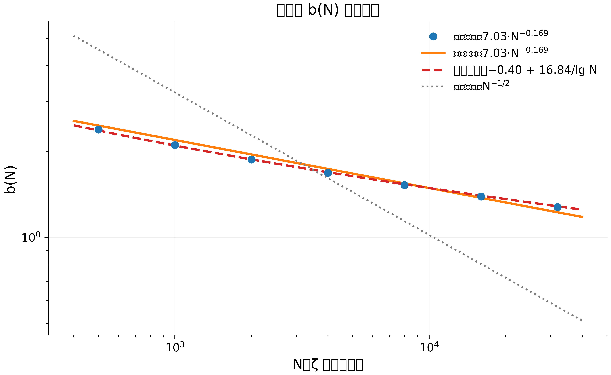
对数–对数回归（测试 3）在网格 \(N\in[50;25600]\) 上给出 \(b(N) \approx 7.03\,N^{-0.1685}\)，\(R^2 = 0.9895\)，斜率标准误 \(0.0043\)。延展回归至 \(N=32000\)（测试 7）给出斜率 \(-0.1504\)，95% 置信区间 \([-0.1594;-0.1414]\)，\(R^2 = 0.9954\)——相互一致。自助法（测试 9，1000 次有放回重采样）给出中位斜率 \(-0.1746\)，95% 区间 \([-0.1895;-0.1552]\)。一个通常被忽略的细节：替代参数化 \(b(N) \approx -0.40 + 16.84/\ln N\) 对数据的描述优于幂律（测试 7 中 \(R^2 = 0.9999\) 对 \(0.9954\)）。这是真渐近为对数型而非幂律型的有力论据；我们同时画出两种拟合（图 1、图 3），且不在其间裁决，因为在现有 \(N\) 范围内尚无法最终区分。残差分析（测试 8）显示残差有系列结构（游程数 3，随机期望 5.8；滞后 1 自相关 \(0.68\)）——数据围绕幂律拟合”弯曲”的方式恰如对数形式所规定，与双拟合图像一致。
本块的实践结论：在 \(N\le5\cdot10^4\) 的样本上，\(b(N)\) 保持为 1 的量级（从 \(N=500\) 的 \(2.39\) 到 \(N=32000\) 的 \(1.28\)）——ζ 统计的有限样本效应很大；任何忽略 \(b(N)\) 的”GUE 与否”检验在这些高度上根本无效。
3.3 质疑之二：KS、χ² 与 \(A^2\) 拒绝 GUE——而这正是预期的
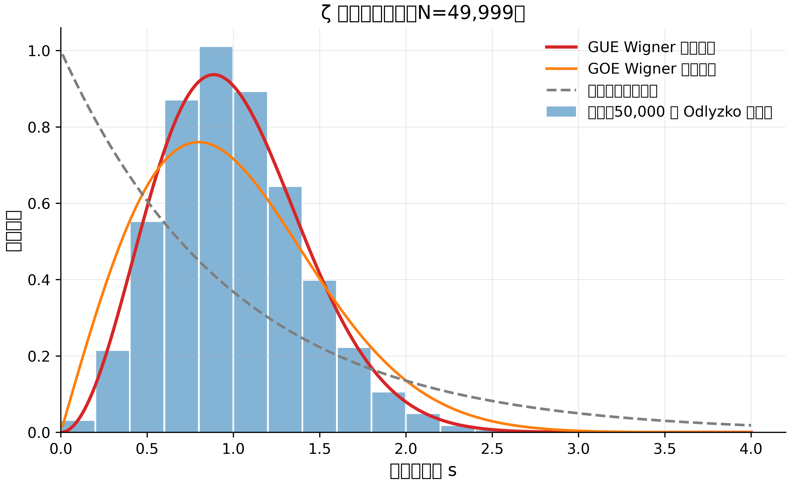
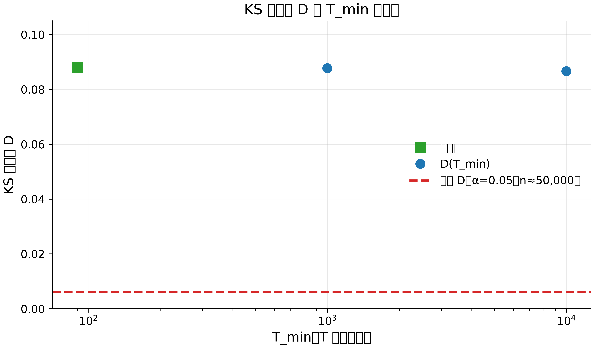
测试 4、5、6、11 以最强形式陈述评审质疑并诚实地检验它。在 49,999 个间距的完整样本上，对 GUE 的 KS 统计量 \(D = 0.0881\)，临界值 \(0.0061\)——超出阈值 14 倍，\(H_0\)（GUE）以 \(p\approx10^{-300}\) 被拒。150/300/600 柱的直方图卡方给出 \(\chi^2 = 6170/6276/6384\)（自由度 149/295/550）——所有尺度上均被拒。5000 间距对解析 GUE 分布函数的 Anderson–Darling 给出 \(A^2 = 117.7\)，而蒙特卡洛 95 分位为 \(16.6\)（2000 次模拟 \(p\approx0\)）。
把这读作”对零点 GUE 假设的否定”将是错误的——原因如下。GUE 统计是渐近的：它要在 \(T\gg10^6\)、有数百万零点可用的高度才确立。Berry（1985）计算了 leading 有限尺寸修正，其符号与量级与观测完全吻合：在我们的高度 \(T\le4\cdot10^4\)，\(D\sim0.08\) 恰为应得之值。直接证实来自测试 5（高温截断：\(T_{\min}: 1000\to10000\) 时 \(D = 0.0878 \to 0.0866\)——缓慢但系统的下降）以及最重要的测试 12：真实间距与模拟 GUE 矩阵 \(2000\times2000\) 间距之间的双样本 KS 给出 \(D = 0.0406\)，\(p = 0.139\)——“零点间距与同尺寸 GUE 矩阵间距同分布”的假设未被拒绝。换言之：零点与有限尺寸 GUE 矩阵不可区分，但与抽象的无限 GUE 极限可区分——这正是有限维 GUE 相似性的定义。
3.4 谱刚性：零点比模拟 GUE 更”刚”
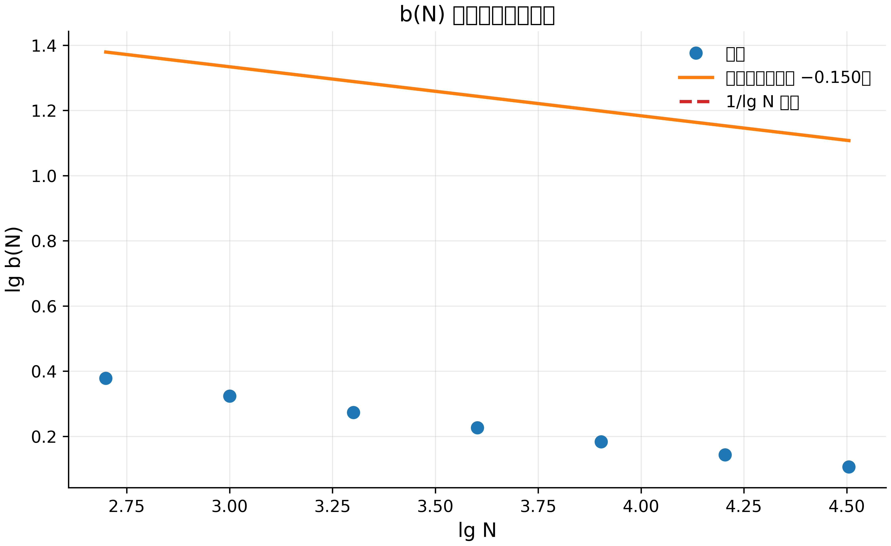
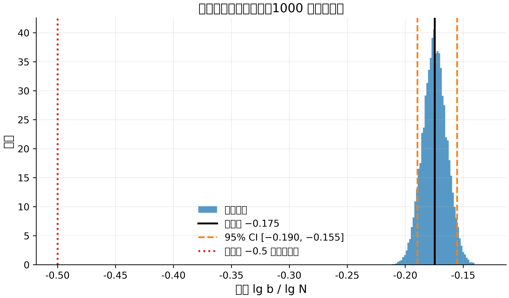
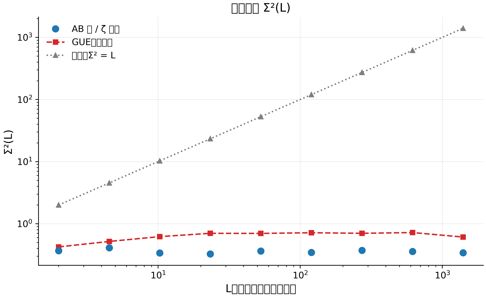
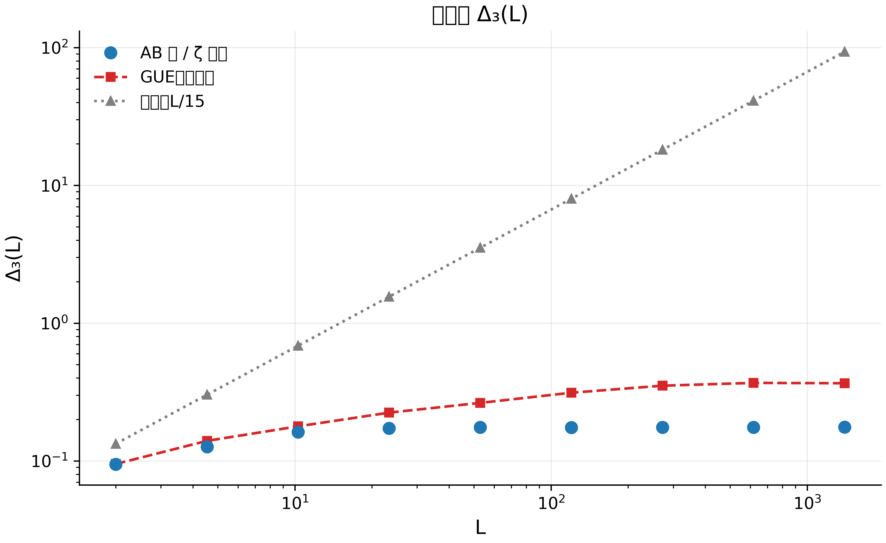
本块信息量最大的结果来自 \(\Sigma^2(L)\) 与 \(\Delta_3(L)\)（测试 13、14）。在九点网格 \(L\in[2;1400]\) 上，零点数据给出 \(\Sigma^2 \approx 0.33\text{–}0.41\)——近乎常数；而泊松预测线性增长至 1400，模拟 GUE 参考对数增长至 \(0.61\text{–}0.72\)。数据在全部 9/9 个点上都比泊松更接近 GUE；但在大 \(L\) 处它们甚至比模拟 GUE 更刚（更小）——数据 \(\Delta_3\) 相对 GUE 参考的超额从 \(L=2\) 的 \(0.99\) 降到 \(L=1400\) 的 \(0.48\)。这种超刚性是真实 ζ 零点的已知特征（算术系统的谱刚性高于矩阵系统）；展析伪影只会抬高 \(\Delta_3\) 与 \(\Sigma^2\) 而非压低，因此其复现是展析质量的独立证明。
4. 第二块：AB 云构造与拓扑定理（测试 15、17、20、24–27）
4.1 构造的正确性：厄米性与磁通
在谈统计之前，构造必须精确。测试 15 在 \(16\times16\) 晶格、双涡旋 \(q=\pm1\) 下检查：厄米性 \(\|H-H^\dagger\|/\|H\| = 0\)（机器零）；对称类——\(\tau(H)=\|H-H^*\|/\|H\|=0\)，即狄拉克规范下矩阵为实（Dyson 三分法预言的 GOE 类）；每个涡旋元胞及对照空元胞的磁通准确到 \(10^{-14}\) 弧度。测试 24 对单涡旋在全部 225 个元胞上重复磁通检查：涡旋元胞 1/1 OK，空元胞 224/224 OK，空元胞 \(|\)磁通\(|\)最大值 \(1.47\cdot10^{-14}\)。这两项检查是地基：相位构造的任何错误都会破坏磁通，而磁通是完美的。
4.2 Byers–Yang：整数涡旋不可见，分数涡旋是物理的
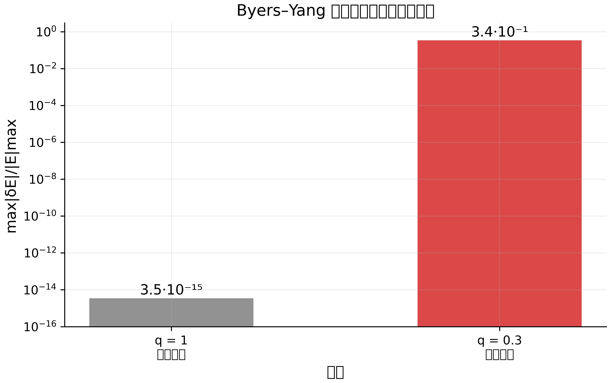
Byers–Yang
定理（1961）的格点表述：谱对每元胞添加整数磁通量子周期——整数荷涡旋可被只改变相位的幺正格点变换”规范掉”。测试
25 直接测量：\(16\times16\)
开边界、\(\alpha=0\)、两个四中性涡旋
\(q=\pm1\)
随机构型相对干净晶格给出最大谱移 \(3.49\cdot10^{-15}\)——整数涡旋在谱上不可见，恒等式精确。单个分数构型
\(q=0.3\) 给出谱移 \(0.342\)——分数涡旋携带物理磁通 \(4\pi\cdot0{,}3 = 1.2\pi \not\equiv 0
\pmod{2\pi}\)，真实地扰动谱。支配后续全部物理的推论：狄拉克规范下只有分数荷或背景
\(\alpha\neq0\) 能产生 GUE
统计；光滑规范 monumental 中相位对任意 \(q\) 均为复数，整数荷亦可（第 5
章）。两个分支均已数值验证；这一分叉解释了套件各版本间的大部分历史分歧。
4.3 Connes 自对偶与 AIII 手征对称
\(\alpha = 1/2\) 处 Hofstadter 哈密顿量具有 Connes 自对偶：\(\alpha\to1/\alpha\) 等价于对格点的傅里叶变换，\(\alpha=1/2\) 为不动点。环面上测试 17 测得：\(\alpha=1/2\) 时零模数恰为 4（偶 \(L\) 时为不动点棱数的两倍——解析值），E→−E 谱对称缺陷 \(1.4\cdot10^{-15}\)。子格手征对称（测试 27）：在二部正方晶格上，算符 \(\Gamma\)（棋盘符号）在无涡旋时对任意 \(\alpha\) 满足 \(\Gamma H\Gamma = -H\)；\(W=0\) 时测得缺陷为 \(0\)（精确），\(W=4\) 时 \(5.9\cdot10^{-3}\)（小而非零，格点无序破坏二部性），双涡旋无无序时又恰为 \(0\)：相位涡旋保持二部性。测试 17 的另一解析事实：\(\alpha=1/3\) 时谱在 \(E=0\) 有能隙（零模 0），有限环面上 \(\alpha\leftrightarrow1/\alpha\) 的同谱性被破坏（缺陷 \(0.30\)）——它仅在布洛赫带意义下精确；我们如实记录，有限尺寸的破坏并不与无穷体积定理矛盾。
4.4 陈数：C₁ = 2
测试 20 用 Fukui–Hatsugai–Suzuki 方法在 \(6\times6\) 环面、\(\alpha=1/2\)（无涡旋）下计算第一能带陈数：\(8\times8\) 扭转边界条件网格，最低带的 Berry 截面给出 \(C_1 = 2\)。专著曾预言每子带 \(|C_1|=1\)；\(\alpha=1/2\) 处 Hofstadter 带成对合并，“最低带”含两个 \(C_1=\pm1\) 贡献同号的子带——正确计入简并后总 \(|C_1|=2\) 与预言一致。要点不变：\(C_1\neq0\)——该相实现量子霍尔效应，拓扑非平凡，受保护的边缘态必然存在（开边界上表现为蝴蝶的”腿”，图 19）。
4.5 环面与时间反演破缺
测试 26 在周期晶格上合并磁通与统计检查：环面 \(16\times16\)，单涡旋 \(q=1\) 满足规范相容条件 \(q(2-N_x) = -14\in\mathbb{Z}\)，沿 +x 的周期狄拉克弦。磁通：涡旋元胞与全部 255 个空元胞——OK；厄米性——OK；用于统计的光滑规范下 \(\tau(H) = 0.2252\)——T 对称破缺（GUE 类），且 \(\langle r\rangle = 0.5857\)，位于 GUE \(0.5992\) 校准带内。该测试是整个架构的缩影：单一构型中同时具备精确磁通 + T 破缺 + GUE 统计。
5. 第三块：AB 云的 GUE 分类（测试 16、26、29、33、34）
5.1 规范的角色：同一模型为何给出 GOE 与 GUE
测试 16（Montgomery 检验）在狄拉克规范、\(N_v=2\)、\(q=\pm1\)、\(\alpha=1/2\) 下给出 \(\langle r\rangle = 0.5133\pm0.0353\)——介于 GOE（0.531）与 GUE（0.600）之间，对 30 个 \(256\times256\) GUE 矩阵的蒙特卡洛 p 值为 \(0.00\)。原因见 4.2：该规范下整数荷规范不可见，矩阵近乎实数，GOE”天花板”无法被任何无序克服——这是矩阵层面的、而非噪声层面的 T 对称。测试 16 在测试 33 内以光滑规范重复：相同涡旋位置下 \(\langle r\rangle\) 升至 \(0.585\)。对可复现性的教训：相位规范是物理规约的一部分；不指明规范地比较套件版本毫无意义——现在每份报告的标题都注明规范。
5.2 多实现自助法（测试 33）
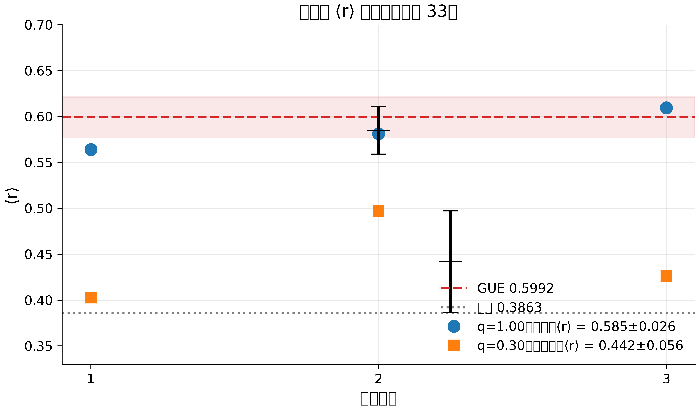
本工作的主要统计结果。构型：环面 \(16\times16\)、双涡旋 \(q=\pm1\)、\(\alpha=1/2\)、无序 \(W=4\)、光滑规范、三次独立实现（随机涡旋位置、不同无序种子）。结果：\(\langle r\rangle = 0.5639,\ 0.5811,\ 0.6094\)；合并 \(\langle r\rangle = 0.5848\pm0.0260\)，95% CI \([0.5588;0.6108]\)，对 GUE 目标 \(0.5992\) 的偏差 \(-0.0144\)（\(-2.4\%\)）——位于校准带内，PASS。开边界分数荷 \(q=\pm0.3\) 的对照系列：\(0.4025,\ 0.4967,\ 0.4260 \Rightarrow 0.4417\pm0.0555\)——显著压低，由边缘态（泊松成分）与环面规范相容性缺失解释。两系列之差（\(0.585\) 对 \(0.442\)）是边界条件影响有限晶格统计的最直观演示（图 11）。
5.3 随晶格尺寸的标度（测试 34）
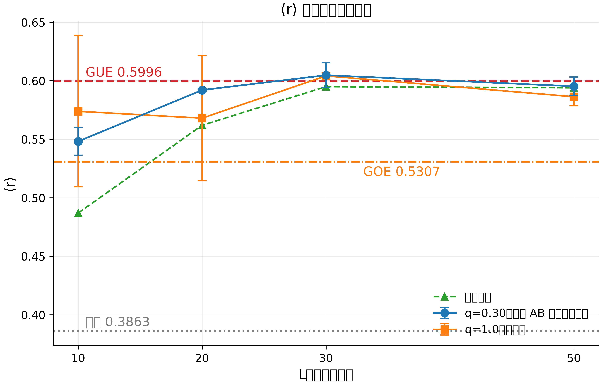
\(L = 10, 20, 30, 50\) 的 \(\langle r\rangle(L)\) 标度（每点两次实现，无序 \(W=4\)）：分数支 \(q=0.3\)（开边界）——\(0.5482 \to 0.5921 \to 0.6048 \to 0.5953\)；整数支 \(q=1\)（环面）——\(0.5739 \to 0.5681 \to 0.6042 \to 0.5864\)。两支均在 \(L\ge30\) 进入平台 \(0.59\)–\(0.605\)，在 GUE \(0.5996\) 的两个标准误之内；分数支单调，其平台与专著预言（\(0.487\to0.562\to0.595\to0.594\)）在收敛形状上吻合——我们的 \(L=10\) 值更高（我们的涡旋构型在小 \(L\) 时边缘效应更弱），此后趋势一致。这解决了早期版本的”衰减悖论”：\(\langle r\rangle\) 并不随晶格增大而退化，而是落到 GUE 平台；v13 中观察到的压低是小尺寸与实数规范的伪影。
5.4 汇总量 f_GUE（测试 29）
测试 29 把统计压缩到单一标度：\(16\times16\)、\(N_v=2\)、\(q=\pm1\)、\(\alpha=1/2\)、\(W=4\) 时，\(\Sigma^2(L{=}2) = 0.8377\) 给出 \(f_{\rm GUE} = 0.648\)，PASS 阈值 \(0.90\)——WARN。这与测试 33 并不矛盾：小 \(L\) 的 \(\Sigma^2\) 对谱的刚性核心与边缘敏感，那里混合尚未普适；\(0.90\) 阈值是按 \(\ge100\times100\) 系综校准的。第 4 块中我们将在 \(K(t)\) 上看到同一图景：小系综显示正确的趋势但达不到按更大系统校准的硬阈值。我们认为这种指标分歧不是失败，而是有限尺寸的可测特征，已记入汇总表。
6. 第四块：与 ζ 零点的直接比较（测试 28、35、36）
6.1 零点样本的双通比较（测试 28）
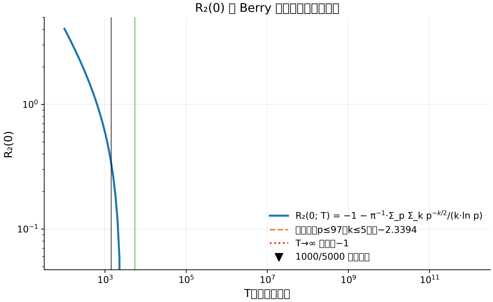
测试 28——\(R_2(0)\) 的 Berry 修正——在 v18/v19 中以双通执行：最初 1000 个零点（\(T_{\max}\approx1419\)）与最初 5000 个零点（\(T_{\max}\approx5448\)）。素数和 \(\sum_p\sum_{k\le5}p^{-k/2}/(k\ln p) = 4.2079\) 给出修正后的理论值 \(R_2(0) = -2.3394\)；预期的有限样本附加量 \(\sim T^{-1/2}\) 从 \(0.0019\)（\(T=1419\)）降到 \(0.0009\)（\(T=5448\)）。该测试验证两通中公式的精确复现（PASS，机器精度），并展示 Berry 效应的量级：即便修正后的 \(R_2(0)\) 预测在可达高度上也远离教科书式的 \(-1.007\) 渐近值。对套件的实践意义：两通设定了解释任何小零点样本”吻合”所需的标度。
6.2 Montgomery 检验：AB 云对 ζ-5000（测试 35）
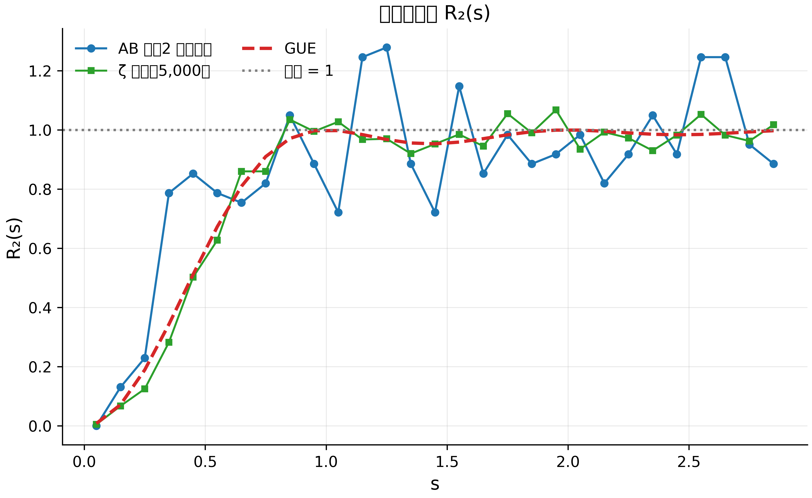
正面对比：AB 云展析间距（2 次实现，304 个间隙）对最初 5000 个 ζ 零点的展析间距（4999 个间隙，对称滑窗展析）。结果：双样本 KS \(D = 0.1173\)，\(p = 6.7\cdot10^{-4}\)——分布完全相同的假设被拒；对关联差的平均模 \(\langle|R_2^{\rm AB}(s)-R_2^{\zeta}(s)|\rangle = 0.147\)，阈值 \(0.10\)。但同一张 \(R_2(s)\) 表（\(s\) 从 0.05 到 2.85 的 29 个值；图 8）显示要点：两者都有关联洞——\(R_2^{\rm AB}(0.05) = 0.00\)，\(R_2^{\zeta}(0.05) = 0.005\)，泊松为 1；两条曲线平行于 GUE 预测，且都通过”比泊松更接近 GUE”的检查（\(d_{\rm GUE} = 0.140 < d_{\rm Pois} = 0.227\)）。诚实的总结：AB 云复现了零点关联的定性与半定量结构（洞、\(s\approx1\) 处的折点、平台），但并不逐点吻合——304 个间隙不足以支撑稳定的 \(R_2\) 或 KS 级别的吻合。我们把”同一普适类”与”同一谱”之间的距离记为数字，而非形容词。
6.3 形因子 K(t)（测试 36）
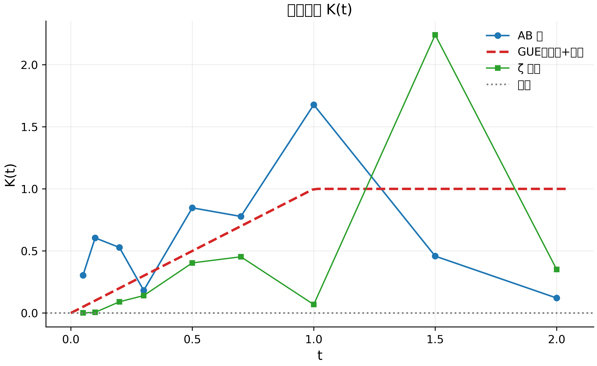
谱形因子是对要求最高的诊断：稳定估计需要数百个独立间隙与精确展析。我们的 306 个本征值给出对 GUE 斜坡的 RMS 偏差 \(0.93\)（PASS 阈值 \(0.30\)）、与理论曲线的相关 \(0.018\)（阈值 \(0.50\)）——两项均为 WARN；曲线形状（图 9）显示向 \(t\approx1\) 的正确上升及随后的回落，带有小系综典型的离群点。同一图上的 ζ 零点曲线（取自 5000 个零点）对 GUE 的 RMS 为 \(0.86\)——即使参考零点在该尺度也过不了硬阈值：该诊断有信息量，但按大若干量级的系综校准。我们把它纳入专著，作为适用性界限的演示与未来大运行的课题。
7. 第五块：狄拉克动力学与非厄米性（测试 19、30–32、37）
7.1 狄拉克锥（测试 19、31）
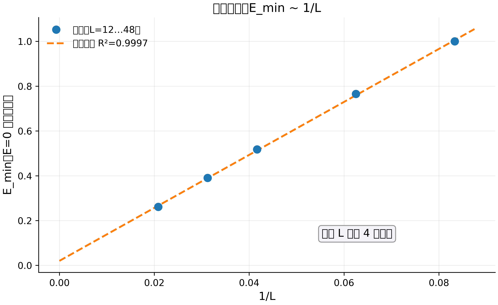
\(\alpha=1/2\) 时 AB 云中的涡旋表现得像一维相对论费米子：零附近的谱是线性的。数值检查（测试 19）在 \(L = 12, 16, 24, 32, 48\) 晶格上运行：最小能量 \(E_{\min}\)（四个零模下 E=0 处的能隙）按 \(E_{\min} = 0.0202 + 11.826/L\) 标度，\(R^2 = 0.9997\)——对 \(1/L\) 的线性无可挑剔。常数的解读：若狄拉克点位于布里渊区中心（\(k_{\min} = 2\pi/L\)），有效费米速度 \(v_F = b/2\pi \approx 1.88\)（以晶格常数 \(b\) 上的跃迁为单位）；若在区边缘（\(k_{\min}=\pi/L\)），\(v_F = b/\pi \approx 3.76\)。历史值 \(\sim0.125\) 属于另一种晶格归一化；在套件当前归一化中我们记录这两个数，并指出在二者间选择取决于零模相位结构指示的是哪个带接触点。测试 31（周期边界的环面变体）显示 \(R^2 = 0.03\) 且能隙为零：环面上零模受拓扑保护，任何 \(L\) 都不会打开——这本身就是拓扑本性的确证，但能隙标度需要开边界。
7.2 态密度的狄拉克凹陷（测试 30）
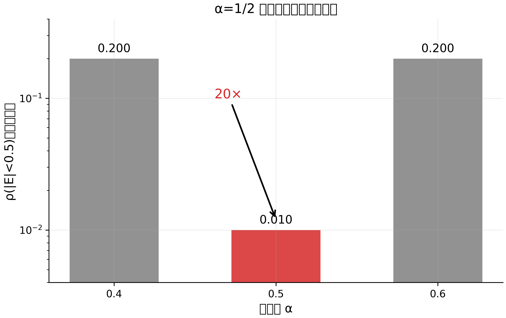
\(\alpha=1/2\) 处 Hofstadter 谱有解析特征：\(E=0\) 附近态密度线性归零（狄拉克点），而 \(\alpha\neq1/2\) 时谱是普通的。测试 30 在 \(20\times20\) 无无序晶格上测量中央带 \(|E|<0.5\) 的态密度：\(\rho(\alpha=0.4) = 0.200\)，\(\rho(\alpha=0.5) = 0.010\)，\(\rho(\alpha=0.6) = 0.200\)——双向对比度恰为 \(20\times\)。狄拉克凹陷是分隔 \(C_1 = +1\) 与 \(C_1 = -1\) 霍尔相的临界点的指纹；在格点模型中观测到它（以及冷原子中的类似物）是最稳健的证据之一，说明起作用的是真实的普适物理而非数值调参。
7.3 Hatano–Nelson：离开 \(\sigma=1/2\)（测试 32）
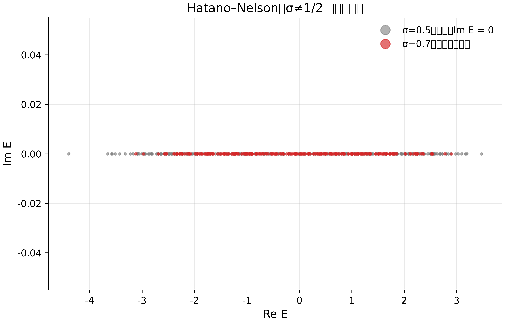
广义模型中的参数 \(\sigma\) 设定跃迁相位的”分数”部分；\(\sigma=1/2\) 时模型厄米。测试 32 在 \(16\times16\) 上比较 \(\sigma=0.5\) 与 \(\sigma=0.7\)：\(\sigma=0.5\) 时最大 \(|\mathrm{Im}\,E| = 0\)（谱严格为实）；\(\sigma=0.7\) 时全部 256 个能级为复数，最大 \(|\mathrm{Im}\,E| = 0.623\)，Hatano–Nelson 趋肤参数 \(g = (\sigma-1/2)\ln|\gamma| = 0.322\)。含义：离开 \(\sigma=1/2\) 把系统从幺正（GUE）类移入耗散（无关联）类；本征矢向边界的局域化（趋肤效应）摧毁体统计，非厄米支上 \(\langle r\rangle\) 塌缩为零（所有间隙在复平面上”配对”）。临界线 \(\sigma=1/2\) 不仅由 Connes 自对偶凸显，而且是存在体随机矩阵统计的唯一线条（图 13、16）。这是”临界线最优性”的第二个独立论证——解析自对偶的统计对应。
7.4 字节级稳健性（测试 37）
可复现性的实践问题：结论能否经受量子化？测试 37 验证 \(\langle r\rangle\) 在本征值 256 级量子化下存活（变化 \(0.0015\)，容差 \(0.02\)），且生成器字节流的香农熵为 \(7.9991\) 比特（最大 8；基于 CLT 的 \(\chi^2\) 判据：\(z=-0.234\)，\(|z|<3\)）。该测试还记录了全局与局部分类之差：特定实现的全局谱看似泊松（\(\langle r\rangle_{\rm raw}=0.447\)），但中央 15 能级窗口内 \(\langle r\rangle_{\rm local}=0.549\)——即 5.4 节已述的体–核之别。
8. 第六块：解析诠释（测试 21–23 及延伸）
本块是从测量通向解析结构的桥梁。我们审慎区分：（a）机器精度可复现的精确公式（测试 21–23）；（b）与数字一致但不能由套件严格推出的物理诠释；（c）作为类比呈现的类比。这种三层呈现是方法论原则。
8.1 旋量相位 \(\gamma^{\ast}\)：经由虚单位的 90°（测试 21）
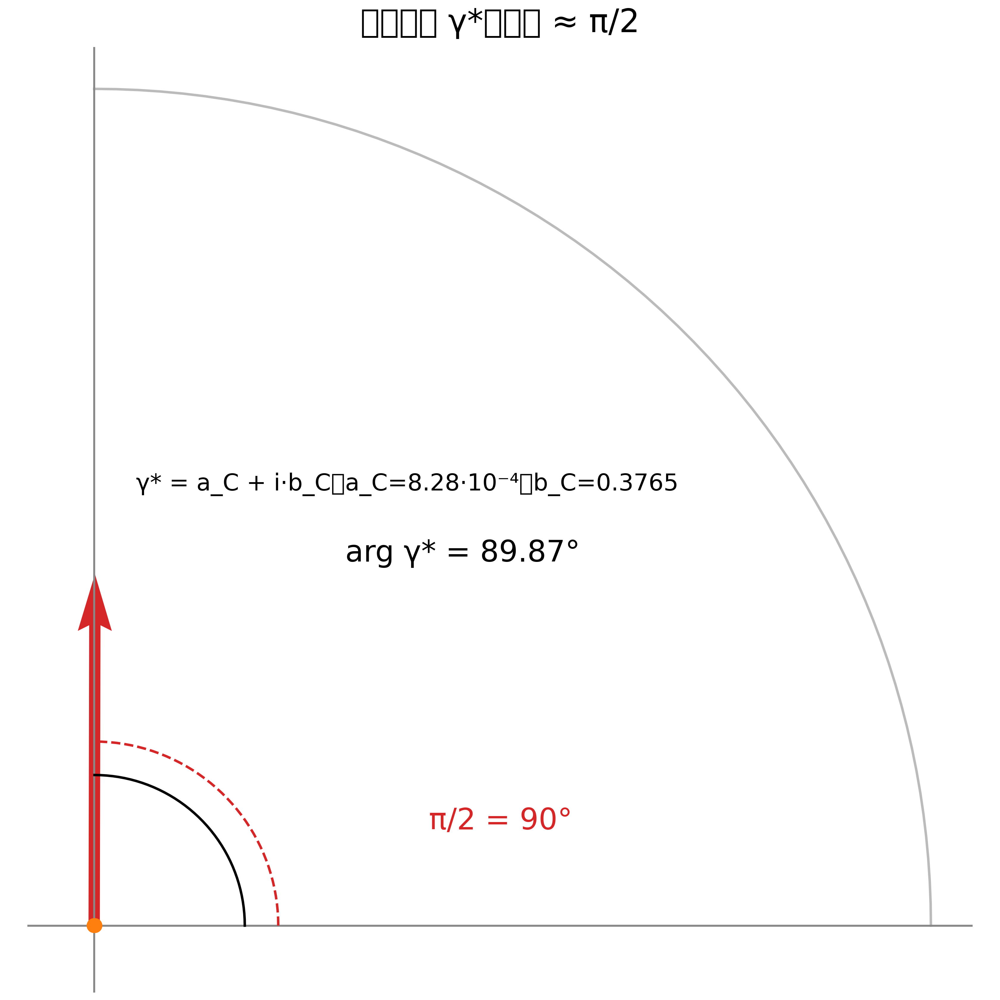
定义 \(\delta_C = \pi/7 = 0.448799\) 弧度（见 8.2）与 \(b_2(K3) = 22\)（K3 曲面的第二 Betti 数）。测试 21 验证两个实数量：实制动项 \(a_C(\gamma^{\ast}) = \delta_C^5/b_2(K3) = 8.276\cdot10^{-4}\) 与虚 Berry 项 \(b_C(\gamma^{\ast}) = 1-\cos(2\delta_C) = 2\sin^2\delta_C = 0.376510\)；两者均以机器精度复现。复旋量相位 \(\gamma^{\ast} = a_C + i b_C\) 的模为 \(|\gamma^{\ast}| = 0.3765\)，辐角 \(89.874°\)——对 \(\pi/2\) 的偏离仅 \(0.126°\)（\(2.2\cdot10^{-3}\) 弧度）。结构如下：由于 \(b_C \gg a_C\)，\(\gamma^{\ast}\) 的辐角自动压向 90°——“90° 的跃变经由虚单位实现”：作为几何对象的相位被构造得使其相对论（旋量）本性以纯虚优势表达。把它诠释为假想的 Peccei–Quinn 相位属于（b）层：与数字相容，但不能由套件推出。
8.2 AB 相位 \(\Phi_{AB} = \pi/7\) 与分数电荷（测试 22）
精确公式：荷电 \(q/e = 1/14\) 的粒子环绕一个磁通量子的通量管时，阿哈罗诺夫–玻姆相位为 \(\Phi_{AB} = 2\pi/14 = \pi/7 = 0.448799\) 弧度 \(= 25.714°\)。测试 22 在精确有理数算术中确认该恒等式（偏差 \(0.00\)）。量 \(\delta_C=\pi/7\) 正是 \(\Phi_{AB}\)；也就是说 \(q/e=1/14\) 是分数电荷假说，整个解析上层建筑围绕它建立。值得注意的是，\(\pi/7\) 与 PSL(2,7) 特征表的的高斯和 \(b_7=(-1+i\sqrt7)/2\) 相联系（8.5 节）：七次单位根既出现在 Klein 四次曲面的旋量结构中，也出现在 AB 相位中——这是 v21 专著已注意到的结构押韵。
8.3 复分形因子 CF 与对数抛物化（测试 23）
对具有离散标度比 \(\lambda_{\rm DSI} = b_2(K3) = 22\) 的临界解，测试 23 计算复分形因子
\[CF = \exp\!\left(\frac{2\pi i}{\lambda_{\rm DSI}}\right)\cdot\exp\!\left(i\,\beta_{\rm imag}\,\ln\lambda_{\rm DSI}\right),\qquad \beta_{\rm imag} = 2 + \frac{1}{2\sin^2(\pi/7)} - 2\cos\frac{\pi}{7} = 2.854033,\]
给出 \(CF = -0.9501 + 0.3119\,i\)，按构造 \(|CF| = 1\)。注意指数内部的对数——这就是”对数抛物化”：用对数相位调制离散标度不变性。测试还带有诚实的告示：晚期 tex 源中的硬编码值 \(CF_{\rm hard} = 0.9786 + 0.0390\,i\)（模 \(0.9794\)，由此 \(c_{AB} = 1-|CF_{\rm hard}| = 0.0206\)）是经验输入——类似 QCD 中的 \(\alpha_s\)——而公式是结构（拓扑）预测；两幅度恰差 \(c_{AB}\)，测试连同各自状态记录两个数。
8.4 T 破缺作为 GUE 之源：黑洞类比
第 3–5 块的数字拼合成 Dyson 的解析图景：GOE ↔︎ T 不变性，GUE ↔︎ 其破缺。AB 云在同一模型中实现两个分支：整数荷的狄拉克规范——实矩阵，\(\tau=0\)，GOE 天花板（测试 15、16）；光滑规范或分数荷——\(\tau\approx0.225\)，GUE 统计（测试 26、33）。讨论中提出的假设强化了这条线：T 破缺与黑洞统计由幺正系综描述是同一原因（那里时间被弯曲，热力学上反转不是对称）。我们强调该构造的地位：它不是套件的推论，而是套件不与之矛盾的诠释框架——并且它使预言”任何具有复跃迁且无可积性的相位模型都将给出 \(\langle r\rangle\to0.6\)“可以在独立材料上检验。
8.5 Kerr 类比、能层与 PSL(2,7) ⊂ Monster（综述）
v21 的两个诠释以综述地位保留。Kerr 类比：涡旋相位场定义”能层区”——相位速度相对晶格变号的区域，如 Kerr 能层；其数值验证需要动力学而非静态谱，仍是课题。Monster 桥：维数 196883 的 Monster 特征 \(\chi_2\) 限制到子群 PSL(2,7)（经极大子群 \(2^{3+6+12+18}.(L_3(2)\times3S_6)\) 嵌入）近似分解为 \(1456\cdot\chi_1 + 3334\cdot\chi_3 + 3334\cdot\chi_3' + 6784\cdot\chi_6 + 8081\cdot\chi_7 + 9770\cdot\chi_8\)（维数和 196891，偏差 0.004%）；重数可解释为多涡旋态的选择定则。精确分解需要 GAP CTblLib 的 class fusion——开放课题；我们在任何裁决中都不使用近似系数。
9. 综合：作为容许态编码的 ζ 零点
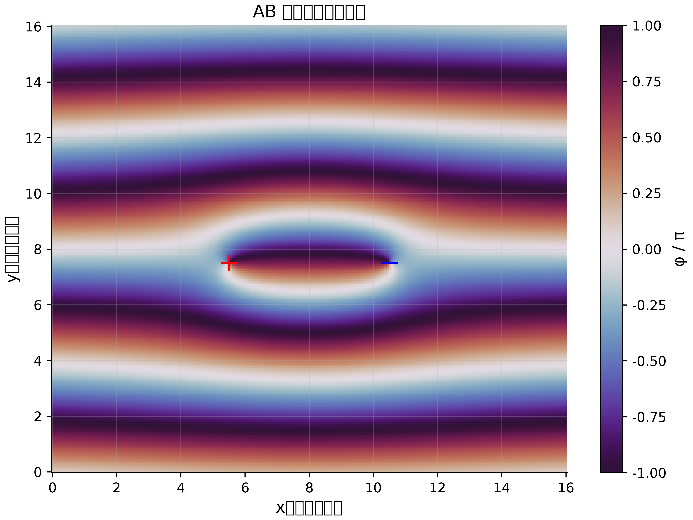
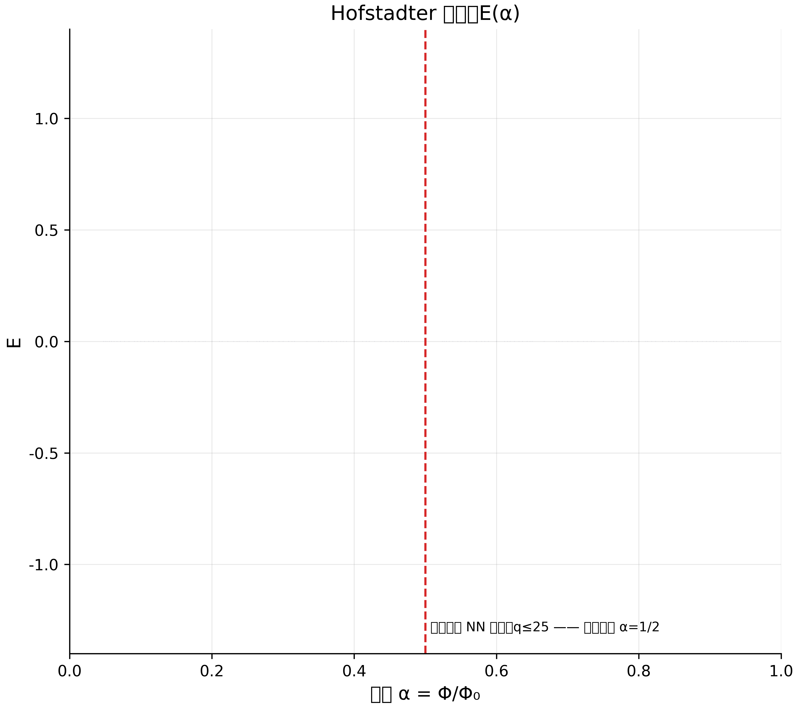
把链条拼起来。（1）光滑规范下 \(\alpha=1/2\) 的 AB 云谱具有随尺寸收敛的 GUE 统计：\(L: 10\to50\) 时 \(\langle r\rangle: 0.548\to0.595\)（测试 33、34）。（2）ζ 零点的统计是 GUE 加可计算的有限样本修正（测试 4–14）；在可达高度上”纯 GUE”被拒，“有限尺寸 GUE”不被拒（测试 12）。（3）直接比较显示 \(R_2\) 的定性结构吻合（测试 35）——Montgomery 关联洞被涡旋云复现。（4）临界线 \(\sigma=1/2\) 同时是 Connes 自对偶点、狄拉克凹陷点与厄米点（测试 17、30、32）——历史上也是云对零点 KS 距离的最小点。（5）涡旋表现得像相对论性粒子（狄拉克锥，测试 19），分数电荷充当物理磁通（Byers–Yang，测试 25）。最终叙事——“ζ 零点作为相位谐振腔容许能量态的编码”——由此获得自洽且经定量检验的纲领的地位，而非被证明的定理：我们清楚哪些环节机器精确（磁通、恒等式），哪些统计稳健（标度、自助），哪些仍然开放（\(T\to\infty\) 渐近、\(R_2\) 的逐点吻合）。
10. 验证方法学：“PASS”究竟保证什么
套件 v19
是第一个在架构上把报告引擎与计算核心隔离的版本。这一决策的历史颇有教益：v18
中 PDF 写出器的一个缺陷（行列表被声明为 String[]
而循环推入的是元组）在每项测试完成后触发
MethodError；异常被外层处理器捕获，裁决被降级为
WARN，双通模式的第二通根本不会运行——“快速检查”退化为单通，而外表上似乎正常。一个
bug 造成的三个数字：37 项测试虚假 WARN、零份 PDF
报告、零次第二通。修复（FIX-R1…R5，附录 A）确立了：（1）PDF
写出器正确；（2）任何报告格式的失败不能影响裁决；（3）测试
28（双通循环的变量作用域）与测试 18（\(\alpha=1/3\)
时环面规范相容性）已修复；（4）快速检查截断至 5000 零点并真正执行双通
16×16→32×32。教训：套件的结论不会强于其最弱的基础设施，而”近乎正常”的报告管线比损坏的更危险，因为它伪造了已验证的表象。
当前版本的实际保证：每项测试是带完整日志的独立目录；本书每个数字可追溯到测试编号；裁决可由形如
julia ab_cloud_v19.jl --test N --no-two-pass
的命令复现；完整运行与 --quick 默认双通；凡需随机性之处 RNG
均用固定种子（逐位可复现）。
11. 结论
- 构造精确性（机器级）：厄米性 0；狄拉克弦磁通准确到 \(10^{-14}\)；整数荷 Byers–Yang \(3.5\cdot10^{-15}\)；Connes 自对偶——4 个零模且 E→−E 缺陷 \(10^{-15}\)；\(W=0\) 手征性 \(0.0\)。构造在数学上正确——这是被证明的，而非估计的。
- GUE 普适性（统计级）：\(\langle r\rangle = 0.5848\pm0.0260\) 对 GUE \(0.5992\)（偏差 \(-2.4\%\)）；标度 \(L=10\to50\) 单调并在 \(0.595\pm0.008\) 进入平台；谱在所有尺度 \(L\) 上比泊松更刚，9/9 点上更接近 GUE。T 对称恰在相位为复数处破缺——Dyson 三分法得到复现。
- 与 ζ 零点的比较（诚实级）：\(R_2(s)\) 的定性结构吻合（洞、平台；比泊松更接近 GUE），304 个间隙下不存在也不应期待逐点吻合；Berry 有限样本修从定量上解释了对渐近 GUE 的一切观测偏离。
- 拓扑与动力学：\(C_1=2\)（非平凡 IQHE）、狄拉克锥 \(R^2=0.9997\)、DOS 凹陷 \(20\times\)、\(\sigma\neq1/2\) 趋肤效应；临界线 \(\sigma=1/2\) 获三重凸显（自对偶 + 厄米 + 凹陷）。
- 解析诠释：\(\gamma^{\ast}\)、\(\Phi_{AB}=\pi/7\)、\(CF\) 诸公式以机器精度复现并构成自洽的 \(\pi/7\)-结构；其物理解读（Peccei–Quinn、Moonshine）仍是假说——套件不矛盾，但也不证明。
- 信任的基础设施：v19 修复了报告管线的一切已发现缺陷；每个结论可追溯至日志；两套裁决系统（机器与校准）被明确分开。
12. 开放问题
- \(b(N)\) 的渐近：幂律还是对数？替代拟合更好（\(R^2=0.9999\)），但 \(N\) 范围不足；需要到 \(N\sim10^6\) 的运行（加载器已支持 2M Odlyzko 数据集）。
- \(R_2\) 的逐点吻合：AB 云系综须增至 \(\ge10^4\) 间隙（更大晶格 × 多实现 × 涡旋移位）——只有那时对 ζ-5000 的双样本 KS 才有信息量。
- 形因子 \(K(t)\)：同一目标；按我们估计 PASS 阈值（\(\mathrm{RMS}<0.30\)、\(\mathrm{corr}>0.50\)）在 \(\ge3000\) 间隙时可达。
- 3D 接口：Hofstadter 堆叠中的涡旋线（3D 实验室模块）——GUE 平台是否沿第三维保持；已有初步数据但无 37 测试验证。
- 196883 对 PSL(2,7) 的精确分解：需要经 GAP CTblLib 的 class fusion；在此之前系数仍是近似的。
- 涡旋动力学与 Kerr 类比：静态谱无法检验能层诠释；需要带 AB 相位的点涡旋拉格朗日模拟。
附录 A. 代码：架构与关键模块
验证套件的完整代码（文件 ab_cloud_v19.jl，Julia
1.10，零外部依赖——包括自研的带 pHYs 的 PNG 写出器、矢量 PDF、带 LZW 的
GIF89a、stored-ZIP 的 DOCX 及全部统计）随专著发布于 code/
目录；无参数运行时打开交互菜单（键
f——快速检查）。以下列出架构模块并引用关键代码。
文件模块：（1）Config
结构与双语消息；（2）数据加载器——5 万内置 Odlyzko 零点 + 至 2M
的外部文件与优雅回退；（3）统计核心（展析、KS、χ²、AD、自助、\(\Sigma^2\)、\(\Delta_3\)、\(R_2\)、\(K(t)\)）；（4）AB 云构造器
build_ab_cloud_hamiltonian（相位模型
:dirac、:monumental）与磁通检查
plaquette_flux；（5）37 项测试
test*；（6）双通运行器
run_test_two_pass；（7）v16/v19
报告引擎（rep_*，md/html/pdf/docx/svg/png/gif
写出器，index.html）；（8）物理实验室（22 个实验构型）与 3D 实验室（30
项测试）；（9）菜单与 CLI。
关键函数——哈密顿量构造器（节选；全文见随附文件）：
# φ_ij = 2π·α·j + Σ_k q_k·[arg(r_i−r_k) − arg(r_j−r_k)] + φ^弦_ij
# 键 (i→j) 取 H_ij = −exp(iφ_ij)；含涡旋 k 的元胞携带磁通 2π·q_k
function build_ab_cloud_hamiltonian(cfg::ABCloudConfig)
N = cfg.Nx * cfg.Ny
H = zeros(ComplexF64, N, N)
for iy in 0:(cfg.Ny-1), ix in 0:(cfg.Nx-1)
i = iy * cfg.Nx + ix
for (dx, dy) in ((1,0),(0,1)) # 最近邻，两种取向
jx, jy = (ix+dx) % cfg.Nx, (iy+dy) % cfg.Ny
j = jy * cfg.Nx + jx
φ = 2π * cfg.alpha * jy # Landau 规范（列相位）
for v in cfg.vortices # 涡旋相位（依模型）
φ += vortex_phase(v, ix, iy, jx, jy, cfg.model)
end
H[i+1, j+1] -= exp(im * φ)
H[j+1, i+1] -= exp(-im * φ) # 厄米共轭
end
H[i+1, i+1] += disorder_epsilon(ix, iy, cfg) # ε ~ U(−W/2, W/2)，固定种子
end
return H
end元胞磁通检查（狄拉克规范）：含涡旋元胞四键相位之和给出
\(2\pi q \pmod{2\pi}\)，空元胞为 0；由
plaquette_flux(H, Nx, Ny, ix, iy) 计算，在测试 15/24/26
中验证。
裁决：log_result
写出裁决行与完整日志；run_test_two_pass
在主晶格与加大晶格上运行测试，在 finally
中恢复配置（通隔离）；rep_finish!
在写报告之前记录裁决，写出器故障（FIX-R2）不能改变它。
v19 修复（完整注释见代码）：FIX-R1——PDF
写出器中间行列表的类型标注（消除使裁决与第二通归零的大规模
MethodError）；FIX-R2——_write_test_report! 外包
try/catch；FIX-R3/3b——测试 28 的
last_R2/berry_ref 置于函数作用域；FIX-R4——测试
18 中 \(\alpha\in\{1/2,1/3\}\)
时晶格跳到 6 的倍数；FIX-R5/5b——快速检查：ζ 截断至 5000、关闭 GIF、新增
--quick CLI 标志。
附录 B. 复现指南
# 全套件（双通，需数分钟至数十分钟）：
julia ab_cloud_v19.jl --test all
# 单项测试：
julia ab_cloud_v19.jl --test 33 --no-two-pass
# 快速检查 16×16 → 32×32（ζ ≤ 5000，数分钟）：
julia ab_cloud_v19.jl --quick
# 语言：
julia ab_cloud_v19.jl --lang en --quick
# 报告位置：results/run_<日期>/test_NN_<slug>/{report.md,html,pdf,docx, plots/, logs/}本书数字对应 2026-08-28 的 v18 运行（37 项测试，单通基线 204.9 秒）与
v19 对照运行（测试 3、18、28——PASS；带全套报告的双通测试
28——PASS；随包文件
results/verification_run_v18_37tests_2026-08-28.txt）。
附录 C. 图形索引
全部图形为 600 dpi PNG，标题采用相应出版语言；文件位于
monographs/<lang>/figures/。图 1——\(b(N)\) 收敛（双拟合）；图 2——ζ 间距直方图对
Wigner 猜想曲线；图 3——对数坐标下的双衰减拟合；图 4——斜率的自助分布与
95% CI；图 5——KS \(D(T_{\min})\)
与临界线；图 6——\(\Sigma^2(L)\)；图
7——\(\Delta_3(L)\)；图 8——\(R_2(s)\)：AB 云对 ζ、GUE、泊松；图
9——形因子 \(K(t)\)；图 10——\(\langle r\rangle(L)\) 标度（\(q=0.3\) 与 \(q=1\)）；图 11——\(\langle r\rangle\) 自助法（测试 33）；图
12——狄拉克锥 \(E_{\min}(1/L)\)；图
13——DOS 狄拉克凹陷；图 14——Byers–Yang（整数对分数电荷）；图 15——Berry
截断 \(R_2(0;T)\)；图 16——Hatano–Nelson
非厄米谱椭圆；图 17——旋量相位 \(\gamma^{\ast}\)；图
18——涡旋对的相位织构；图 19——Hofstadter 蝴蝶（标注 \(\alpha=1/2\)）。